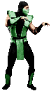

But Kitana must find a way to reach the newly crowned queen, Sindel first, and warn her of their true past. When Shao Kahn makes a failed attempt at stealing the souls which occupy earth's hell, Scorpion is able to escape from the Nether Realm.
Free to roam the earth once more, Scorpion holds allegiance with no one. He's a wild card in Earth's struggle against Outworld. The ninja returns un-masked. He was betrayed by his own ninja clan-the Lin Kuei.
He broke the sacred codes of honor by leaving the clan and is marked for death. Unlike the ninja of old, his pursuers come as machines
He must not only defend against the outworld menace, but must also elude his soulless assassins.  Always a reliable servant to Shao Kahn, Reptile is chosen to assist Jade in the capture of Kitana. In contrast to Jade's instructions, Reptile is ordered to stop the renegage princess at all costs...
Even if it means her death...
 After the Outworld invasion, Liu Kang finds himself the prime target of Kahn's extermination squads.
After the Outworld invasion, Liu Kang finds himself the prime target of Kahn's extermination squads. He is the Shaolin champion and has thwarted Kahn's schemes in the past. Of all the humans, Kang poses the greatest threat to Shao Kahn's rule.
 Sonya disappeared after the first tournament but was later rescued from the Outworld by Jax.
Sonya disappeared after the first tournament but was later rescued from the Outworld by Jax.After returning to Earth, she and Jax try to warn the US government of the looming Outworld menace.
Lacking proof, they watch helplessly as Shao Kahn begins his invasion. Cyrax is unit LK-4D4. The 2nd of three prototype cybernetic ninjas built by the Lin Kuei.
Like his counterparts, his last programmed command is to find and terminate the rogue ninja, Sub-Zero.
Without a soul, Cyrax goes undetected by Shao Kahn and remains a possible threat against his occupation of Earth. After failing to convince his superiors of the coming Outworld menace, Jax begins to covertly prepare for future battle with Kahn's minions.
He outfits both arms with indestructible bionic implants. This is a war Jax is prepared to win. Kano is thought to have been killed in the first tournament. Instead, he's found alive in the Outworld, where he once again escapes capture by Sonya.
Before the actual Outworld invasion, Kano convinces Shao Kahn to spare his soul. Kahn needs someone to teach his warriors how to use Earth's weapons.
Kano is the man to do it. When the renegade princess Kitana makes her escape into the unknown regions of Earth, Jade is appointed by Shao Kahn to bring her back alive.
Once a close friend of the princess, she is faced wit hthe choice of betraying her friend or disobeying her emperor. She was hand picked by Shao Kahn to serve as Sindel's personal protector.
She becomes suspicious of Shao Kahn's loyalty towards her race of Shokan when he places Motaro as the leader of his exetermination squads.
On Outworld, Motoro's race of Centaurians are the natural enemy of the Shokan. Tsung is Shao Kahn's lead sorceror. He once fell out of favor with his emperor after failing to win the Earth Realm through tournament battle.
But the ever scheming Shang Tsung is instrumental in Kahn's conquest of Earth. He has been granted more power than ever.